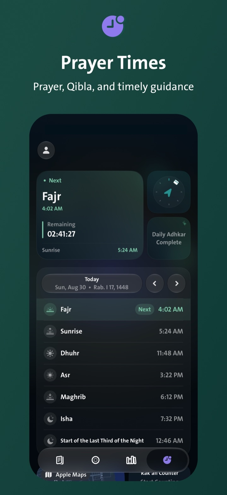
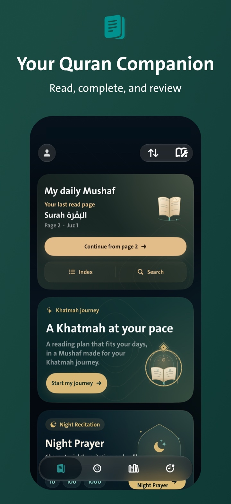
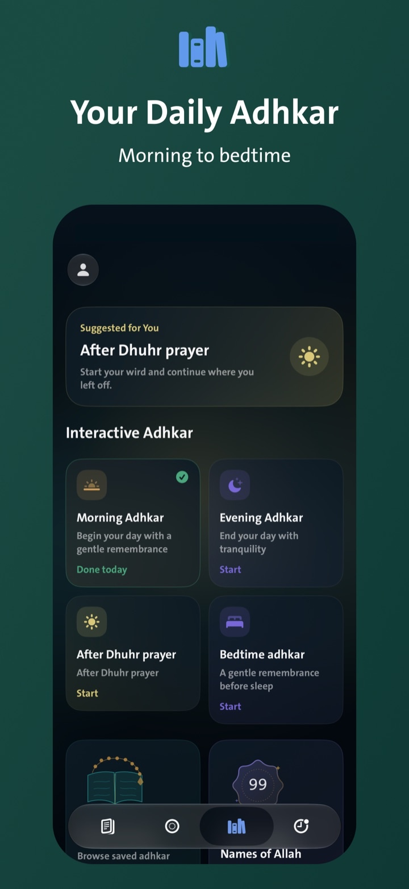
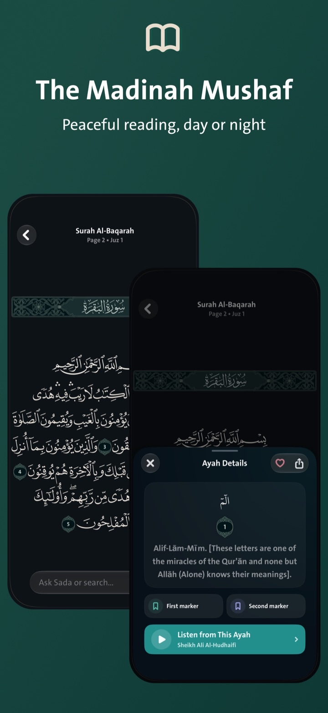
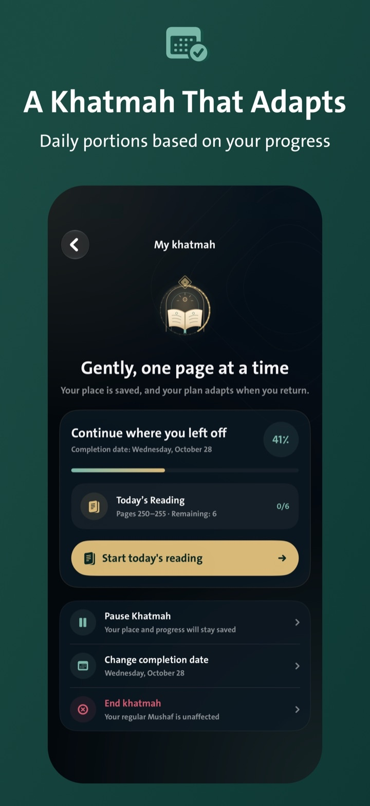
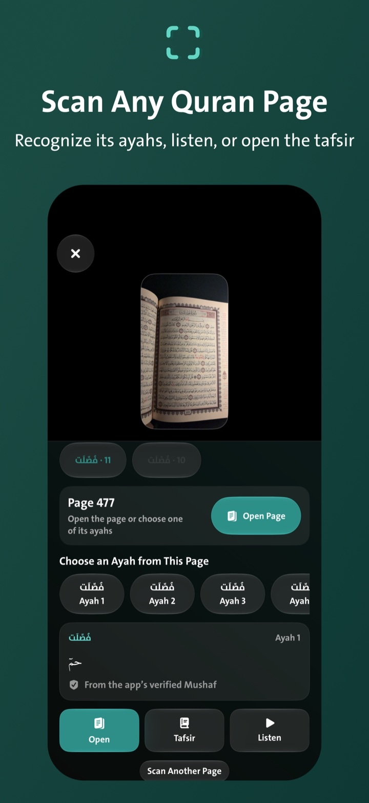
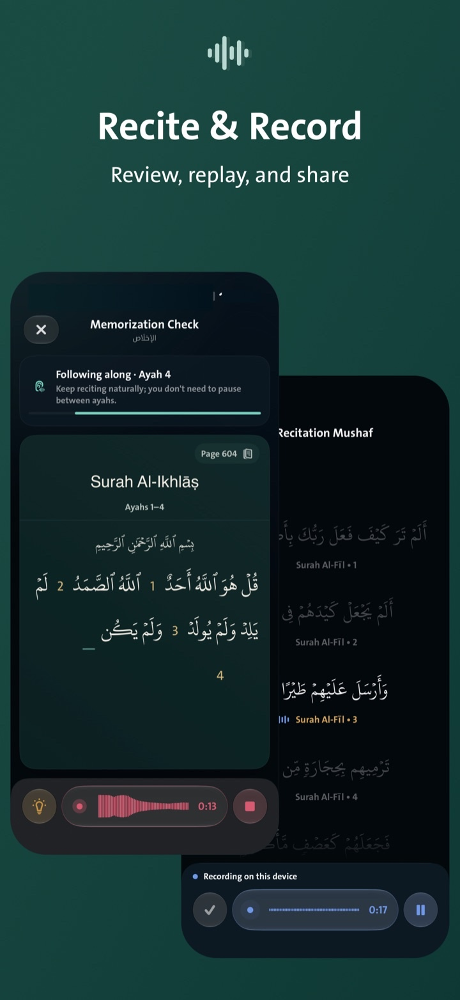

Fajr
Start the day with prayer.
See the next prayer and time remaining, find the Qibla, and discover nearby mosques.

Wird
From Fajr to bedtime.
The Madinah Mushaf, daily adhkar, prayer times and Qibla, plus a khatmah that adapts as you progress—all in one app.

A day with Wird
Wird brings the right part of the app forward at the right time—from Fajr to your bedtime adhkar.
Fajr
See the next prayer and time remaining, find the Qibla, and discover nearby mosques.

After prayer
Open post-prayer or morning adhkar. Wird keeps your place so you can continue later.

Morning
Continue from your last page in the Madinah Mushaf or text view. Open any ayah for tafsir, translation, audio, or sharing.

Today’s portion
Choose a completion date. Wird recalculates your daily portion from what you have actually read.

During the day — Sada
Type, “How many times is Musa mentioned?” Sada searches the Quran text in the app and shows the result with the ayah locations.
A moment for dhikr
Choose a dhikr and switch between both methods without leaving the Tasbeeh screen.
Evening
Capture any page; Wird identifies its ayahs so you can open them, listen, or read tafsir.

Recitation review
Record from inside the Mushaf, then replay or share your recitation when you choose.

More to discover
Memorization review
Night prayer
Dhikr and dua library
From a Quran page
At a glance
Privacy first
Before bed
Complete evening and bedtime adhkar, review your khatmah, and return tomorrow to the same place.
Download on theApp StoreFor iPhone and iPad, in Arabic, English, and Indonesian.